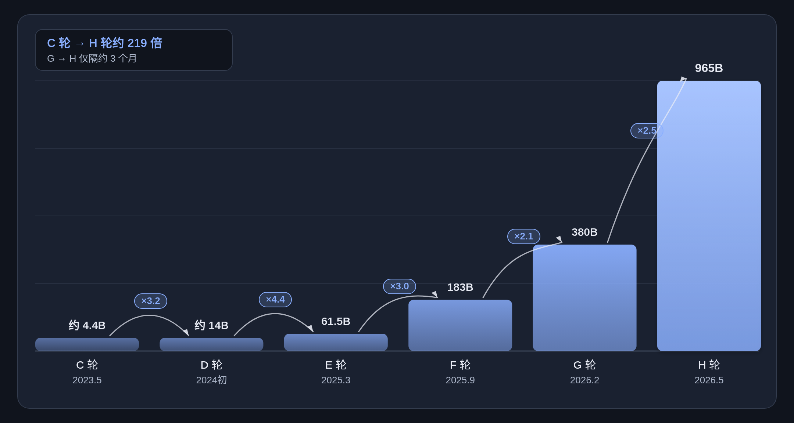

Anthropic 招股书解读｜年亏八百亿却还在造血
整理自 Anthropic, PBC Form S-1（SEC 提交日 2026-10-26，美国时间）及公司公告。金额单位：M＝百万美元，B＝十亿美元。标签：正式披露 自行计算 媒体 空白 $2T＝用户假设
Anthropic 递交 S-1：现金流、收入、算力、股权、融资与愿景六章；数字分正式披露与推算，不构成买卖建议。
封面结论
关键数字快照（正式披露口径）：
- 发行价 / 股数：提交稿仍空白 空白
- $2T 是用户假设，不是 S-1 正式披露，也不是本页结论 $2T＝用户假设
这是什么 / 读前须知
2026年10月26日（美国时间），Anthropic, PBC 向 SEC 提交 Form S-1。
- 拟发 Class A 普通股，申请纳斯达克全球精选代码 ANT 正式披露
- PBC＝Public Benefit Corporation（公益公司），章程兼顾公共利益
- 发行价、股数、注册号提交稿仍空白；注册声明尚未生效 空白
读数标签（本页统一）：
- 正式披露＝S-1 原文；自行计算＝用披露数推算（标公式）
- 媒体＝S-1 无对应合计，不拿来填空；空白＝提交稿未填
- 金额一律 M（百万美元）/ B（十亿美元）；$2T＝用户假设，非披露
- 本页不是招股书，也不构成买卖建议
- 发行人
- Anthropic, PBC（公益公司）
- 提交日
- 2026-10-26（SEC 封面）
- 拟上市 / 代码
- Nasdaq Global Select / ANT
- 主承销
- Goldman Sachs；Morgan Stanley
- 累计已募资（截至2026-06-30）
- 约 141.1B 正式披露
- 现金+短投（截至2026-06-30）
- 131.651B 正式披露
一、现金流与流动性
本章要点
- 经营现金流 +3.929B（正式披露，H1'26 首次转正）
- GAAP 净亏损 −80.748B，其中公允变动 −72.388B（非现金，正式披露）
- 现金+短投 131.651B（截至 2026-06-30，正式披露）
H1'26 从经营亏损到 GAAP 净亏的路径（正式披露）。
展开细读：现金流细项
经营现金流 OCF（Operating Cash Flow）：卖货回款减日常开支后，生意本身进出的现金。正式披露；H1'26 首次转正为 +3.929B。
融资现金流：股权/债项等筹资净流入。H1'26 主因可赎回可转优先股发行净额 110.432B。
| 期间 | 融资现金流 | 口径 |
|---|---|---|
| H1'26 | 110.774B | 正式披露 |
| FY25 | 19.96B | 正式披露 |
| FY24 | 7.248B | 正式披露 |
| FY23 | 2.32B | 正式披露 |
ICF＝Investing Cash Flow（投资现金流）：买设备或短投，不是向投资人融资。H1'26 净流出 17.181B（正式披露）：
- 购买短期投资约 18.972B
- 短期投资到期/出售回笼约 2.61B
- 购置不动产与设备约 0.482B
现金及受限现金期末 H1'26：114.918B（正式披露）。
其中可转债/衍生负债/SAFE 公允价值变动（正式披露，非现金）：估值上涨时该项亏损往往同步放大。H1'26 −72.388B。
瀑布路径（十亿美元，正式披露）：经营亏损 −0.693 → +利息 1.111 → −公允变动 72.388 → −其他 8.757 → GAAP 净亏 −80.748。
1.2 现金 + 短投
| 项目 | 金额 | 口径 |
|---|---|---|
| 现金及现金等价物 | 112.4B | 正式披露 |
| 短期投资 | 19.3B | 正式披露 |
| 现金+短投合计 | 131.651B | 正式披露 |
| 总资产 | 147.358B | 正式披露 |
| 其他资产 | 约 15.7B | 自行计算：147.358−131.651 |
截至 2026-06-30，现金与短投占资产绝大部分。
1.3 自由现金流 FCF（自行计算）
FCF＝Free Cash Flow：OCF 扣掉资本开支后还剩多少现金。招股书未写成正式 KPI。
- 口径：OCF − CapEx（购置不动产与设备）
- 短投买卖不算进狭义 FCF
| 期间 | OCF | CapEx | FCF |
|---|---|---|---|
| H1'26 | 3.929B | 0.482B | +3.447B |
| FY2025 | −2.637B | 131M | −2.768B |
| H1'25 | −1.513B | 18M | −1.531B |
上表 FCF 均为自行计算（OCF、CapEx 来自正式披露）。
二、收入与可持续性（含单位经济）
本章要点
- 收入从 FY23 的 41M 升至 Q2'26 单季 11.555B；H1'26 为 16.286B 正式披露
- H1'26 粗毛利率约 85% 自行计算；Q2'26 单季经营利润约 1.0B
- NRR 约 900%；$10万+ TTM 客户逾 11,900（截至 2026-09-30） 正式披露
期间口径：FY＝自然年；H1＝至 6 月 30 日六个月；单季＝三个月。叙述提到 2026 年三季度，但 Q3 收入提交稿空白——不加媒体数。
2.1 收入路径（正式披露）
- H1'26 较 H1'25 约 +1,300% 正式披露
- Q2'26 单季经营利润约 1.0B
- Q2'26 的 11.555B ×4 ≈ 46.22B「季化年跑速」自行计算（非指引，不能代替空白 Q3）
2.2 用量 vs 订阅、地区
| 期间 | 用量（M$） | 订阅（M$） | 合计 |
|---|---|---|---|
| FY23 | 39 | 2 | 41M |
| FY24 | 288 | 98 | 386M |
| FY25 | 3,796 | 789 | 4.585B |
| H1'25 | 983 | 180 | 1.163B |
| H1'26 | 13,064 | 3,222 | 16.286B |
金额单位统一为百万美元（正式披露）。用量仍是大头，订阅占比抬到约两成（H1'26 用量约 80%、订阅约 20%）。
地区（账单地址，正式披露）：H1'26 美国 11.763B、国际 4.523B（国际约 28%，自行计算）。
2.3 NRR / RPO / CSP / 集中度
| 时点 | $10万+ TTM 客户 | 口径 |
|---|---|---|
| 2026-09-30 | 逾 11,900 | 正式披露 |
| 2025-09-30 | 逾 950 | 正式披露 · 一年前 |
| 2025末约 | 约 1,500 | 媒体近似 |
| 2024末约 | 约 200 | 媒体近似 |
| 2023末约 | 约 20 | 媒体近似 |
- 前九个月前五大约 25%、无单一客户大于 10% 正式披露（截至 2026-09-30）
- H1'26 经云市场开票约 48% 正式披露
- CSP＝Cloud Service Provider：客户经 AWS/GCP/Azure 下单、由云厂商开票代收
- $10万+ TTM 客户
- 逾 11,900（2026-09-30；一年前逾 950）
- $100万+ TTM 客户
- 逾 1,900（2026-09-30）
- $1,000万+ TTM 客户
- 约 250（2026-09-30）
- 前五大收入占比
- 约 25%（前九个月；无单一>10%）
- NRR（净收入留存）
- 约 900%（截至 2026-09-30）
- RPO（剩余履约义务）
- 10.8B（2026-06-30）；约 75% 预计 12 个月内确认
- 递延收入余额
- 1.65B（2026-06-30）
- CSP 渠道占比
- H1'26 约 48%（FY25 约 47%）
前五大绝对额口径提醒：占比属「前九个月」；Q3'26 收入空白 → 前九个月总收入无完整正式数。算不出正式的「前五大合计 XX.XB」。示意：若误用 H1'26 的 16.286B×25%≈4.07B（自行计算，口径不完全匹配）。
2.4 COGS 与粗毛利率
收入与 Cost of revenue 正式披露；粗毛利与粗毛利率自行计算。H1'26 粗毛利率约 85%（账上 COGS 口径）。
| 口径 | 粗毛利率 | 说明 |
|---|---|---|
| S-1 COGS 粗毛利 | 约 85% | 自行计算：13.906B÷16.286B |
| 若算力全作成本 | 约 45% | 自行计算：(16.286−8.945)÷16.286 |
- 若把「Compute and infrastructure」8.945B 全当成本 → 约 45%（自行计算）
- 8.945B 含研发/训练/内部用量，不能直接当 COGS
- 渠道分成费率 S-1 未单列完整，不另画第三档
- Opus 5.5 较 Opus 5 降本约 40%（正式披露）；公司称会刺激更多用量
2.5 可持续性 Pros / Cons
支撑可持续性的披露事实
- H1'26 收入同比约 +1,300%；Q2'26 单季约 11.6B 且经营利润已转正
- NRR 约 900%；$10万+ TTM 客户逾 11,900；RPO 10.8B
- H1'26 粗毛利率约 85%（自行计算）；经营现金流净流入约 3.9B
- 现金+短投约 131.7B（截至 2026-06-30）
威胁可持续性的披露事实
- 前五大约占前九个月收入 25%；大客户可减支；合同多为短锁定
- 近一半收入经 CSP 市场；AWS/GCP/Azure 既是渠道也是算力对手方与战略投资者
- 对 Google/Amazon/Microsoft 等有数十至百十亿级、多数不可取消最低采购
- 前沿竞争激烈；算力承诺与人才成本难立刻下调
- Q3'26 收入在 S-1 仍空白
三、云与算力承诺
本章要点
- Google / Amazon / Microsoft＝至少最低采购，多数不可取消 正式披露
- SpaceX.AI＝合计最高约 120.5B 上限；初始期后任一方可 90 天通知取消 正式披露
- 三大云最低承诺自行加总约 269.4B 自行计算（未含 SpaceX.AI）
短付则 true-up（补齐最低承诺差额，正式披露）。
| 对手方 | 承诺 | 期间 / 条件 | 口径 |
|---|---|---|---|
| 至少约 114.5B | 2026-04 至 2033-07；多数不可取消；短付则 true-up | 正式披露 | |
| Amazon | 至少 110B | 2026-05 至 2036-04；多数不可取消；短付则 true-up | 正式披露 |
| Microsoft | 至少 44.9B | 2026-11 至 2033-05；多数不可取消；未交付档位可按档取消 | 正式披露 |
| SpaceX.AI（原 X.AI） | 合计最高约 120.5B | 延至约 2029；满载后约 3.1B/月。初始期至 2027-01 / 2027-03 后，任一方 90 天通知可取消 | 正式披露 |
自行加总数量级（非正式合计）：Google 114.5B + Amazon 110B + Microsoft 44.9B = 269.4B「最低云支出」下限感；未含 SpaceX.AI 上限、AMD 潜在超 20B 等。
四、股权与控制权
本章要点
- Founder LLC 一般表决权约 50.1%（无经济利益的一股）+ LTBT 选董事 正式披露
- Class A 有经济利益，对董事会多数与一般表决无控制力 正式披露
- 主要股东表百分比多为空白；Amazon≈12%、Google≈14.99% 仅为协议上限（非正式精确持股）
4.1 主要股东：有出处 vs 上限/推算/预留
有正式出处：
- Founder LLC 一般表决权约 50.1%（正式披露；无经济利益的一股）
- 公益基金经济利益 5%（正式披露）
- Class A 公众股：有经济利益；对董事会多数与一般表决无控制力（正式披露）
| 主体 | 表述 | 标签 |
|---|---|---|
| Amazon | 约 12% 协议转换上限；S-1 仅写转换后超过 5%，非已确认精确% | 上限 |
| 约 14.99% 协议上限；S-1 仅写转换后超过 5%，非已确认精确% | 上限 | |
| 七位创始人合计 | 经济利益约 10%（自行计算）；控制权另见 Founder LLC 表决权 | 推算 |
| 员工计划预留 | 约 22.8%（预留÷全面稀释；预留≠已实持） | 预留 |
| Microsoft | 主要股东表百分比空白 | 空白 |
控制权在 Founder LLC 约 50.1% 表决权 + LTBT 选董事；Class A 无控制力。累计融资约 141.1B 带来稀释，但不改变上述表决结构（正式披露）。
4.2 媒体近似值（非 S-1 精确披露）
媒体称 Google「去年」持股约 14%；招股书主要股东表未给出 Amazon、Alphabet 等机构的精确持股百分比。此类标媒体，不作正式披露填空。
4.3 控制权（简要）
| 机制 | 说明 | 口径 |
|---|---|---|
| Founder LLC 表决权 | 七位联合创始人通过无经济利益的一股，合计掌握一般事项约 50.1% 表决权 | 正式披露 |
| LTBT 选董事 | 通过另一股选出董事会多数席位 | 正式披露 |
| 公众股份（Class A） | 有经济利益；对董事会多数与一般表决没有控制力。因 Nasdaq 规则属受控公司 | 正式披露 |
| 公益基金增发 | 股价较上一里程碑每涨 50% 时，董事会可酌情再发最多约 2%（起步为 IPO 发行价） | 正式披露 |
| 创始人慈善承诺 | 联合创始人各承诺个人所持股权的 80% 用于慈善（自愿、可撤销表述） | 正式披露 |
五、多轮融资
本章要点
- 投后从 C 约 4.4B 到 H 965B（约 219×；公告/公开口径）
- 累计已募约 141.1B（截至 2026-06-30） 正式披露
- H 轮融资 65B、投后 965B（公告口径）；备用 NPA/信贷约 77B 均未提款 正式披露
5.1 投后估值路径
投后估值路径（正式/公告口径）

- C 取区间中约 4.4B；D 取约 14B；E–H 为公告口径
- A/B 证据较弱，图从 C 起
- post-money＝投后估值（本轮钱打进公司后的公司估值）
5.2 融资金额
5.3 各轮明细
| 轮次 | 投后 / 融资 | 口径 |
|---|---|---|
| Series A · Jaan Tallinn 等 | 投后约 0.845B · 融资 0.124B | 公开报道 |
| Series B · SBF / FTX 等 | 投后约 4.0B · 融资 0.58B | 公开报道 |
| Series C · Spark Capital（Google 等参与） | 投后约 4.1–4.6B · 融资约 0.45B | 公开报道 |
| Series D · Menlo Ventures 等 | 投后约 13–15B · 融资约 1.2B | 公开报道 |
| Series E · Lightspeed | 投后 61.5B · 融资 3.5B | 公告口径 |
| Series F · ICONIQ（Fidelity、Lightspeed） | 投后 183B · 融资 13B | 公告口径 |
| Series G · GIC、Coatue | 投后 380B · 融资 30B（S-1 另有 G-1+G-2 ≈ 45.2B，含后续认购） | 公告口径 |
| Series H · Altimeter、Dragoneer、Greenoaks、Sequoia | 投后 965B · 融资 65B | 公告口径 |
- E–H 以公司公告为主（证据较高）
- A–D 投后估值 S-1 未写成正式 post-money，上列为公开报道/数据库，勿与 E–H 混为同级
- G 轮公告 30B / 380B；S-1 另有 G-1+G-2 ≈ 45.2B——冲突仅对照
5.4 估值倍数 P/S
| 基准 | 约 P/S | 说明 |
|---|---|---|
| 假设 IPO 2.0T | 约 43x | 自行计算 · 2T 为用户假设 |
| 假设 IPO 1.5T | 约 32x | 自行计算 |
| 假设 IPO 1.0T | 约 22x | 自行计算 |
| H 轮 965B | 约 20.9x | 自行计算：965÷46.22 |
- 季化年跑速＝Q2'26 收入 11.555B×4≈46.22B（非指引）
- 2T＝用户假设；他处若见约 51x，多半用更早年化；本页用最新季化
5.5 备用额度 NPA
| 额度 | 金额 | 状态 |
|---|---|---|
| Broadcom NPA | 最高约 42B | 未提款备用 |
| Google NPA | 剩余约 20B | 未提款备用 |
| Amazon NPA | 剩余约 15B | 未提款备用 |
| 循环信贷 | 15B | 已签约额度 |
- 上表四项合计约 77B；截至 2026-06-30 均未提款
- 已到账累计约 141.1B 不含这些备用额度
- Amazon Notes（2023/2024）本金约 6.203B；IPO 时在约 12% 上限内转 Class N（已发行、仍在外）
六、愿景与规划
本章要点
- 公司押注 Powerful AI 将在数年内广泛可用，并给出五项能力特征 正式披露
- closing the loop：2026-09 codebase 贡献 >90% 由 Claude 写成；人均日均代码量 >45× 正式披露
- 增长战略覆盖人才、算力、能力与安全、采纳与新市场 正式披露（不构成买卖建议）
6.1 Powerful AI：定义与时间表
公司相信 Powerful AI（高度能力与影响力的前沿 AI）将在数年内广泛可用，并给出五项特征 正式披露：
- 认知能力达到或超过多数专业与科学领域顶尖人类专家
- 能驾驭人类虚拟工作界面（文本/音频/视频/直接操控电脑）
- 可自主完成持续数小时、数天乃至数周的复杂任务，并在需要时寻求澄清与反馈
- 可跨多个实例协调，并与人类及其他 AI 协作
- 可通过数字连接控制实验室设备、机器人系统等，与物理世界接口
若导向人类最难问题且风险被负责任管理，公司称潜在收益「非凡」，包括：把数十年科学进步压缩到数年；加速药物发现、疾病检测与个性化疗法；以及教育、能源与发展中国家能力扩展等 正式披露。
6.2 「数据中心里的天才之国」与 Virtual Collaborators
公司描述目标形态：数百万 Virtual Collaborators 并行运行——各自独立处理无关问题，或无缝协作完成共同目标；结果被称作「a country of geniuses in a data center」，面向每个组织与经济部门可用 正式披露。
- Virtual Collaborators＝能以专业水准与人类并肩完成复杂、多步工作的 AI
- 今日最清晰形态：Claude Code（规划/编写/测试/调试至可投产代码）
- 轨迹：开放式任务可持续数小时至数周，并以「出色同事」的判断与主动性自主执行
6.3 Closing the loop：Claude 写自身迭代
「closing the loop」＝递归开发循环：每一代 Claude 协助构建下一代（跑实验、生成/处理训练数据、自动化评测与安全审计、编写与审查代码） 正式披露。
- 直接表现之一：加速产出 compute multipliers（算法侧算力倍率）
- 更强模型 → 更快发现效率改进 → 再训练更强、部署更省
- 公司称这是前沿 AI 最重要的结构性优势之一
6.4 算力：既是引擎也是约束
公司把算力当作单一可互换资源池，按边际产出在训练、服务客户与内部 Claude 用量之间动态调配 正式披露。同时风险因素明确：算力关键投入受限、供应商容量与电力等约束，可能限制训练、服务客户与竞争地位。
- 多芯片架构：AWS Trainium、Google TPU、NVIDIA GPU、AMD GPU
- 承诺总包与近端到期金额在提交稿仍为空白（见第三章）
- 增长战略写明：在现有承诺之外继续锁定算力、扩展自有数据中心足迹、提升多芯片效率与算法效率
6.5 科学与生命科学落地（S-1 有写的部分）
生命科学与实体世界扩展，仅整理 S-1 已写明的表述 正式披露；推文中若另有「分子机器 / 基因编辑」等说法且未见于 S-1，本页不采信为正式披露。
- 药物发现与开发：客户、生物技术伙伴及公司自有研究者已在使用 Claude
- 公司自述：招聘行业专家、建设分子生物实验室（molecular biology lab）、收购 Coefficient Bio，并与行业领袖合作
- Model Hardware Standard（研究预览）：使 AI 代理可操作显微镜、液体处理设备与现成机械臂等实验室/制造设备
- 增长战略「进入新市场」：从医疗与生命科学延伸到机器人与体力工作
6.6 增长战略要点
| 方向 | 要点 | 口径 |
|---|---|---|
| 人才与文化 | 继续投资低自我、高影响、使命对齐的文化，以维持人才密度 | 正式披露 |
| 算力 | 追加算力承诺、扩展数据中心、多芯片效率与算法效率 | 正式披露 |
| Claude 智力 / 能力 / 安全 | 能力与安全同步推进，扩展可靠可用边界与专业领域应用 | 正式披露 |
| 可及性与采纳 | 自有平台/应用 + AWS/GCP/Azure；加深直销与 Applied AI、品牌与国际化 | 正式披露 |
| 新市场与战略交易 | 生命科学/机器人等新域；选择性收购、投资与生态伙伴（含 SI/咨询/数据平台） | 正式披露 |
来源与免责
- Anthropic, PBC — Form S-1（SEC） · 2026-10-26
- Anthropic 公司公告：files S-1 · 2026-10-26
免责声明：公开文件的中文整理与解释，不构成要约、招揽、投资建议、法律或税务意见。以 SEC 英文原文及生效后招股说明书为准。